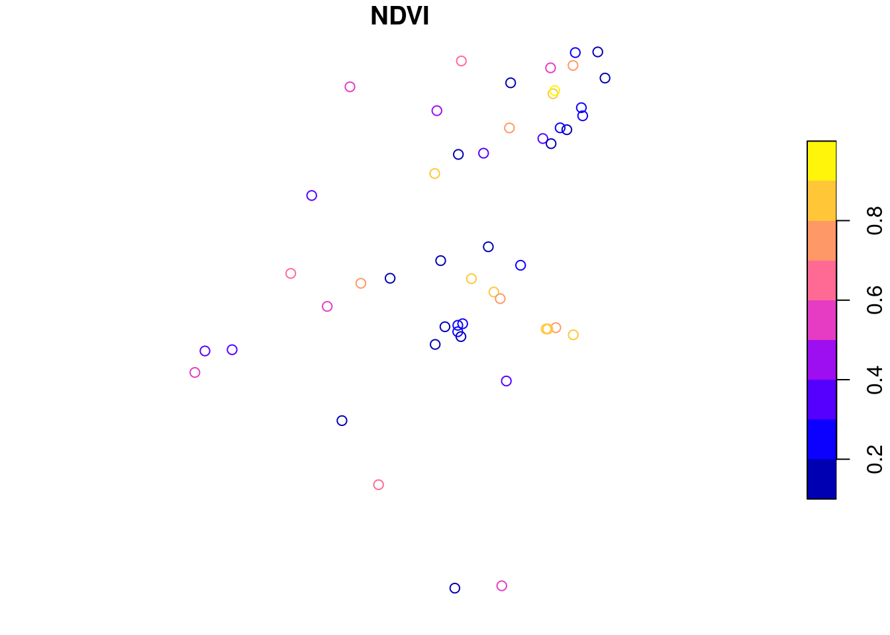
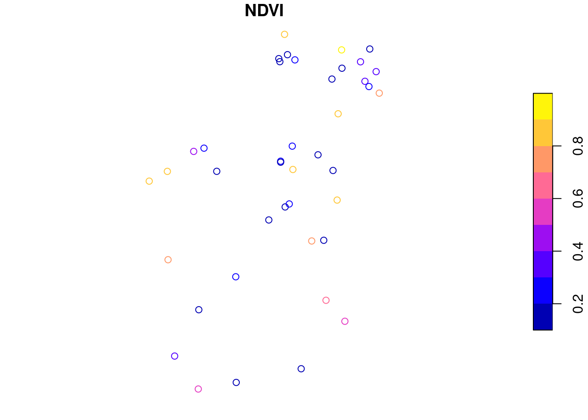

Example 3: Extracting training data for machine-learning applications
Please notice that code chunks in this document are meant to be executed on an Amazon Web Services (AWS) machine in region us-west-2 (Oregon). Examples have been selected to yield computation times acceptable for a live demonstration. Please feel free to apply on larger areas and/or using a higher spatial resolution.
Introduction
Machine learning models for land cover classification, change detection, spatiotemporal prediction, and similar tasks in most cases need a large number of observations for training. In this example, we will extract satellite observations from provided labeled points. Therefore, we will use primary data from the European Land Use and Coverage Area frame Survey (LUCAS) containing ground-based land cover point samples from 2018. The data can be downloaded as country-wise CSV files (see here). We will use observations over Germany and extract Sentinel-2 NDVI observations of common wheat samples.
1. Load and preprocess samples
First, we need to convert our CSV table into a spatially referenced sf object. After reading the CSV files, we remove rows without valid coordinates and create an sf object using st_as_sf() by specifying the names of latitude and longitude columns.
As expected from random sampling, points are scattared all over Germany, i.e., we need to load a lot of Sentinel-2 images though only extracting single values.
2. Query related images from STAC
As in the previous examples, we calculate the bounding box, perform a STAC query to find relevant images and afterwards create a gdalcubes image collection object. Since our point samples cover a large area and time range, this may include quite a lot of images and the STAC request might take some time. To avoid repeating these steps. we simply store the resulting image collection as a file and reload it when needed.
Now, we (re)load the image collection, and define a rather large data cube at 10m / five days spatial and temporal resolution respectively. We also calculate the NDVI, which we would like to use as “explanatory” variable.
Now, we can extract values from the cube using the extract_geom() function. Given a data cube and any simple feature geometries as an sf object, the function can be used as a general method to extract data cube pixel values at irregular locations. extract_geom() returns a data.frame with columns for feature identifiers (FIDs, often row numbers of the sf object), time, and bands / variables of the data cube. Each row represents the data cube values of one pixel relating to the feature given by the FID column. For anything other than simple point geometries (e.g. POLYGON, LINESTRING, MULTIPOINT, and similar), the result may contain multiple rows per feature. In these cases, it is possible to apply an aggregation function to compute mean, median or similar summary statistics over features.
extract_geom() drops any pixels with missing values only. Hence, if a feature is outside the extent of the data cube, or all pixels of a feature are NA due to clouds or unavailability of images, these pixels will not be included in the result. In contrast, if the input features contain overlapping geometries, pixels may be included several times (with different values in the FID column).
6. Combine results with geometries
To combine the extracted data cube values with the original sf objects including the geometries, the merge() function can be used. merge() performs table join operations on common columns (e.g. IDs). We therefore first need to add an FID column to the features and then join both tables by their FID columns. Notice that by default, this is performing an inner join, i.e. rows with FIDs that only exist in one table will be dropped. Alternatively, we can set all.x=TRUE to make sure that our result contains all features from the original dataset (left outer join).
sf = training_sitessf$FID =rownames(sf)df =merge(sf, ndvi_obs, by ="FID")dfplot(df[,"NDVI"])

## Simple feature collection with 50 features and 5 fields
## Geometry type: POINT
## Dimension: XY
## Bounding box: xmin: 6.208992 ymin: 48.4182 xmax: 13.53252 ymax: 54.39755
## Geodetic CRS: WGS 84
## First 10 features:
## FID LC1 t time NDVI geometry
## 1 100 B11 2018-05-28 2018-05-26 0.7307033 POINT (12.65453 51.32266)
## 2 12 B11 2018-09-18 2018-09-18 0.1460348 POINT (9.695081 51.87378)
## 3 14 B11 2018-06-06 2018-06-05 0.6570792 POINT (9.488548 49.57162)
## 4 17 B11 2018-07-27 2018-07-25 0.2251553 POINT (13.002 54.38994)
## 5 19 B11 2018-09-20 2018-09-18 0.1645102 POINT (10.59793 52.07039)
## 6 2 B11 2018-07-09 2018-07-05 0.3225485 POINT (6.389366 51.06301)
## 7 25 B11 2018-07-05 2018-07-05 0.5268871 POINT (6.208992 50.82327)
## 8 26 B11 2018-07-18 2018-07-15 0.1856209 POINT (12.85069 53.53028)
## 9 27 B11 2018-07-30 2018-07-30 0.3617021 POINT (12.42257 53.43167)
## 10 28 B11 2018-07-12 2018-07-10 0.2105908 POINT (13.1101 53.77573)
7. Extract complete time series
If we skip the time_column argument in extract_geom() we can extract complete time series at irregular points. Below, we use the same locations but extract complete time series, which we plot using the ggplot2 package.
wheat_timeseries <-extract_geom(s2_cube, training_sites)nrow(wheat_timeseries)library(ggplot2)wheat_timeseries |>ggplot( aes(x =as.Date(time), y = NDVI, color =factor(FID))) +geom_line(size =0.5) +ylim(c(0,1)) +xlim(c(as.Date("2018-05-01"),as.Date("2018-09-30"))) +xlab("Time") +ylab("NDVI")

## [1] 1426
Source Code
---title: "Example 3: Extracting training data for machine-learning applications"execute: eval: true # local---```{r}#| label: config#| include: false#| eval: trueif (file.exists("config.R")) {source("config.R")}``````{r}#| include: falsegdalcubes_options(default_chunksize =c(1,768,768))```*Please notice that code chunks in this document are meant to be executed on an Amazon Web Services (AWS) machine in region `us-west-2` (Oregon). Examples have been selected to yield computation times acceptable for a live demonstration. Please feel free to apply on larger areas and/or using a higher spatial resolution.*## IntroductionMachine learning models for land cover classification, change detection, spatiotemporal prediction, and similar tasks in most cases need a large number of observations for training. In this example, we will extract satellite observations from provided labeled points. Therefore, we will use primary data from the [European Land Use and Coverage Area frame Survey (LUCAS)](https://ec.europa.eu/eurostat/web/lucas/) containing ground-based land cover point samples from 2018. The data can be downloaded as country-wise CSV files (see [here](https://ec.europa.eu/eurostat/de/web/lucas/data/primary-data/2018)). We will use observations over Germany and extract Sentinel-2 NDVI observations of common wheat samples.## 1. Load and preprocess samplesFirst, we need to convert our CSV table into a spatially referenced sf object. After reading the CSV files, we remove rows without valid coordinates and create an sf object using `st_as_sf()` by specifying the names of latitude and longitude columns.```{r}library(sf)x =read.csv("data/DE_2018_20200213.CSV")x = x[-which(is.na(x$TH_LAT) |is.na(x$TH_LONG)),]x =st_as_sf(x, coords =c("TH_LONG", "TH_LAT"), crs ="EPSG:4326")x$t =as.Date(x$SURVEY_DATE, format ="%d/%m/%y") head(x[,c("LC1","t")])nrow(x)```The LC1 column contains codes for primary land cover types of the samples. We are interested in _common wheat_, which is decoded as B11. We now use the `dplyr` package to sample 100 corresponding observations and afterwards plot the result.```{r}x[startsWith(x$LC1, c("B11")), c("LC1","t")] |> dplyr::slice_sample(n =100) -> training_sitesplot(training_sites[,"LC1"])```As expected from random sampling, points are scattared all over Germany, i.e., we need to load a lot of Sentinel-2 images though only extracting single values.## 2. Query related images from STACAs in the previous examples, we calculate the bounding box, perform a STAC query to find relevant images and afterwards create a gdalcubes image collection object. Since our point samples cover a large area and time range, this may include quite a lot of images and the STAC request might take some time. To avoid repeating these steps. we simply store the resulting image collection as a file and reload it when needed. ```{r}bbox =st_bbox(training_sites) bboxlibrary(rstac)s =stac("https://earth-search.aws.element84.com/v0")items = s |>stac_search(collections ="sentinel-s2-l2a-cogs",bbox =c(bbox["xmin"],bbox["ymin"], bbox["xmax"],bbox["ymax"]), datetime ="2018-04-01/2018-09-30") |>post_request() |>items_fetch(progress =FALSE)items```## 3. Convert STAC results to a gdalcubes image collection```{r}library(gdalcubes)# REMOVE DUPLICATE STAC ITEMS!ids =unlist(lapply(items$features, function(x) {x$id}))items$features_unique = items$features[-which((duplicated(ids)))]s2_collection =stac_image_collection(items$features_unique, asset_names =c("B02","B03","B04","B08","SCL"),property_filter =function(x) {x[["eo:cloud_cover"]] <10},out_file ="S2_de_2018.db")```## 4. Create an NDVI data cubeNow, we (re)load the image collection, and define a rather large data cube at 10m / five days spatial and temporal resolution respectively.We also calculate the NDVI, which we would like to use as "explanatory" variable. ```{r}s2_collection =image_collection("S2_de_2018.db")s2_collectionv =cube_view(extent=s2_collection, dt="P5D", dx=10, dy=10, srs="EPSG:3857", aggregation ="median", resampling ="nearest")S2.mask =image_mask("SCL", values =c(3,8,9))raster_cube(s2_collection, v, mask = S2.mask) |>select_bands(c("B04","B08")) |>apply_pixel("(B08-B04)/(B08+B04)", "NDVI") -> s2_cubes2_cube```## 5. Extract NDVI values from point samplesNow, we can extract values from the cube using the `extract_geom()` function. Given a data cube and any simple feature geometries as an sf object, the function can be used as a general method to extract data cube pixel values at irregular locations. `extract_geom()` returns a `data.frame` with columns for feature identifiers (FIDs, often row numbers of the `sf` object), time, and bands / variables of the data cube. Each row represents the data cube values of one pixel relating to the feature given by the FID column. For anything other than simple point geometries (e.g. POLYGON, LINESTRING, MULTIPOINT, and similar), the result may contain multiple rows per feature. In these cases, it is possible to apply an aggregation function to compute mean, median or similar summary statistics over features.```{r}ndvi_obs <-extract_geom(s2_cube, training_sites, time_column ="t")nrow(ndvi_obs)ndvi_obs````extract_geom()` drops any pixels with missing values only. Hence, if a feature is outside the extent of the data cube, or all pixels of a feature are NA due to clouds or unavailability of images, these pixels will not be included in the result. In contrast, if the input features contain overlapping geometries, pixels may be included several times (with different values in the FID column).## 6. Combine results with geometriesTo combine the extracted data cube values with the original sf objects including the geometries, the merge() function can be used. merge() performs table join operations on common columns (e.g. IDs). We therefore first need to add an FID column to the features and then join both tables by their FID columns. Notice that by default, this is performing an inner join, i.e. rows with FIDs that only exist in one table will be dropped. Alternatively, we can set all.x=TRUE to make sure that our result contains all features from the original dataset (left outer join).```{r}sf = training_sitessf$FID =rownames(sf)df =merge(sf, ndvi_obs, by ="FID")dfplot(df[,"NDVI"])```## 7. Extract complete time seriesIf we skip the `time_column` argument in `extract_geom()` we can extract complete time series at irregular points. Below, we use the same locations but extract complete time series, which we plot using the `ggplot2` package.```{r}wheat_timeseries <-extract_geom(s2_cube, training_sites)nrow(wheat_timeseries)library(ggplot2)wheat_timeseries |>ggplot( aes(x =as.Date(time), y = NDVI, color =factor(FID))) +geom_line(size =0.5) +ylim(c(0,1)) +xlim(c(as.Date("2018-05-01"),as.Date("2018-09-30"))) +xlab("Time") +ylab("NDVI") ```